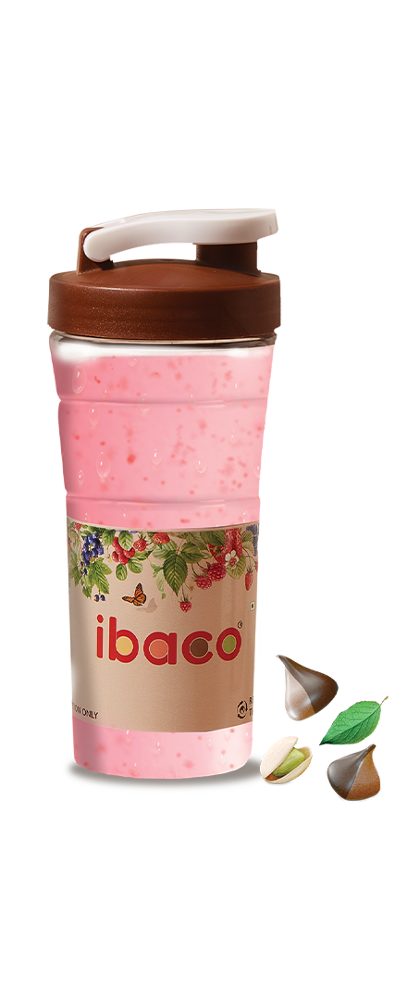
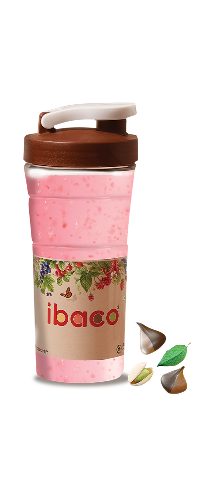

ibaco lets you craft your own sundaes from a choice of exotic flavours, toppings and sauces.
This unique brand from Hatsun Agro Product Ltd. offers 36 flavours inspired from exotic places around the world, and aims to offer more choices and deliver greater standards of taste to its customers.
You can also pick from a whole range of ice cream cakes and create your own ice cream bars and cones.
With our world-inspired flavours, we believe we are giving you an ice cream experience that will take you across the globe from Peru to Australia.

 
